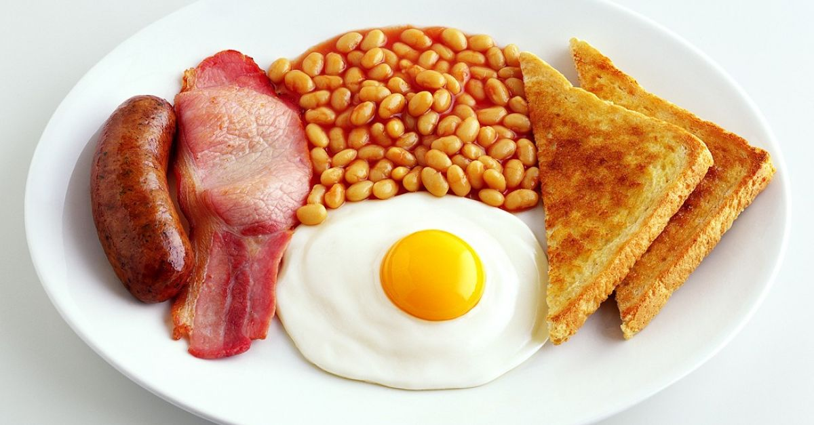

English Breakfast

A full English is a hearty, hefty breakfast plate served in the UK. This dish became so popular that it's pretty much offered throughout the world as an all-day breakfast.
--Ingredients--
- Sausages
- Back bacon
- Eggs
- Toast
- Tomatos
- Mushrooms
- Sweetened beans
--Instructions--
It takes a bit of juggling and two pans, because making a full English is mostly about multitasking. You can do it!
- Open the can of beans and warm in a small pot over low heat, stirring occasionally.
- While the beans are warming, cook the sausages over medium to medium low, until browned and cooked through, turning as needed. Push the sausages to one side and add the bacon and fry, flipping as needed.
- Cut the tomatos and mushrooms. Sear in a pan with oil until fully cooked.
- Move the meats from the pan and fry the bread in the drippings until golden and crisp. Cook the eggs in the pan that the mushrooms and tomatoes were in.
- Scoop the beans in the middle of the plate then add the bacon at 1-2 o'clock, add the sausages at 3 o'clock, then the eggs at 6. Then fill the rest of the plate with the tomatoes at 11 o’clock and the mushrooms at 12. Fried bread can get tucked in wherever or placed on a side plate. Enjoy!
Main menu